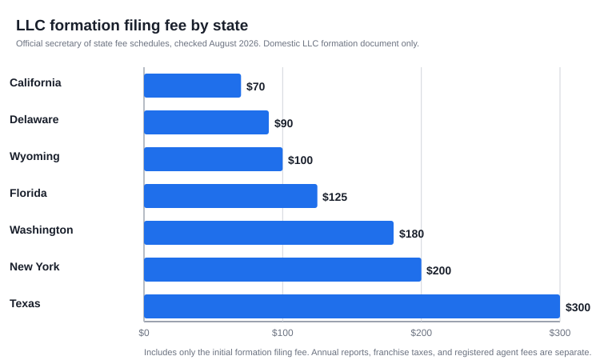

How Much Does It Cost to Form an LLC? (2026 State Fee Guide)
The short version
TL;DR: Forming an LLC costs between $70 and $300 in state filing fees for the states we verified in August 2026 (California $70, Delaware $90, Wyoming $100, Florida $125, Washington $180, New York $200, Texas $300). That fee is just the beginning: most founders also pay for a registered agent, and some states hit you with annual report fees or taxes that dwarf the filing fee. California, for example, charges $70 to form but $800 a year in franchise tax. Budget a few hundred dollars total for a no-frills formation, and verify the fee with your own secretary of state first.Last updated: 2026-08-14. Prices and details verified against official sources.
What does it actually cost to form an LLC?
Every state charges a fee to file your LLC formation documents, and the number varies a lot. In the states we checked against official secretary of state fee schedules, the range is $70 (California) to $300 (Texas). There is no state where filing is free, and the fee has nothing to do with how complex your LLC is: a one-person side business pays the same as a funded startup.
Two things matter when you compare states. The filing fee is a one-time cost; keeping the LLC alive is a separate question, covered below. And a cheap filing fee does not mean a cheap state: California charges the lowest fee here ($70) and pairs it with the most expensive annual tax of any state we checked.
What are the LLC filing fees by state?
The numbers below come from each state's own filing office (secretary of state or division of corporations), pulled in August 2026. Fees are what a single-member, manager-managed or member-managed domestic LLC pays to file its initial formation document.
| State | Formation filing fee | Document filed | Other costs to know |
|---|---|---|---|
| California | $70 | Articles of Organization (Form LLC-1) | $800/year franchise tax; $20 Statement of Information (Form LLC-12) |
| Delaware | $90 | Certificate of Formation | Annual LLC tax; no state income tax for LLCs |
| Wyoming | $100 | Articles of Organization | Annual report required |
| Florida | $125 | Articles of Organization | $100 filing fee plus $25 registered agent fee; annual report $138.75 |
| Washington | $180 | Certificate of Formation | Annual report $70 |
| New York | $200 | Articles of Organization | Newspaper publication requirement; biennial statement $9 |
| Texas | $300 | Certificate of Formation (Form 205) | Most small LLCs owe no franchise tax |

If you do not live in one of these seven states, the honest answer is: it varies by state. Filing fees are set by each state's legislature, so check your own secretary of state's fee schedule before you budget. The states above are the ones most first-time founders ask about, and they show the realistic range: roughly $70 to $300 for the initial filing.
What else do you pay when you form an LLC?
The state fee is rarely your only expense on day one. Here is what typically shows up alongside it:
- Registered agent. Every state requires an LLC to have a registered agent with a physical address in the state. In many states you can name yourself if you have a street address (not a PO box), which costs nothing extra. Otherwise a commercial service charges its own yearly fee, usually the second-biggest line item for DIY founders.
- EIN. Free, direct from the IRS at irs.gov. You need one to open a business bank account and pay employees. Any site that charges for an EIN is charging for something the IRS gives away.
- Operating agreement. Most states do not require one and there is no state fee, but a written agreement is still worth having; free templates cover most situations.
- Name reservation. Optional in most states and usually a small fee; New York charges $5 per name search.
- Expedited filing. Optional. New York charges $25 for 24-hour processing, $75 for same-day, and $150 for two-hour processing; other states set their own rates.
- New York's publication requirement. New York is the standout: publish a notice in two newspapers for six consecutive weeks and file a Certificate of Publication with a $50 fee. Newspapers set their own rates, so this can add a few hundred dollars in year one.
California gets its own bullet because the cost is unusual. The $70 filing fee is the cheapest on our list, but the Franchise Tax Board charges every LLC an $800 annual tax, due by the 15th day of the fourth month after you file, plus an additional fee once revenue passes $250,000. For a California LLC, the $800 tax is the number that actually matters in your budget.
How much does an LLC cost to keep running every year?
The ongoing cost is where states really diverge:
- Washington: $70 annual report
- Florida: $138.75 annual report
- New York: $9 biennial statement (every two years)
- California: $800 annual franchise tax, plus $20 Statement of Information every two years
So a Washington LLC costs $250 to start and $70 a year after that, while a California LLC costs $70 to start and $800 a year after that. The first-year total for a basic California LLC is over $890 before you add a registered agent. That difference matters more than the filing fee when you are choosing where to form.
Why do filing fees vary so much by state?
Because every state sets its own, and the fee is a policy decision, not a reflection of service quality. Some states keep the filing fee low and recover the cost through annual reports or franchise taxes; others bundle the full price into the initial filing. For most founders the takeaway is simple: form where you actually do business, and treat "cheap to form" and "cheap to run" as separate questions.
Do you need a paid formation service?
No. Forming an LLC is a paperwork filing, not a legal proceeding, and the states above all accept online filings that take most people under an hour. Formation services are not required, and their fees are on top of the state fee. They can be worth it if you want someone else to track deadlines or handle a state with extra steps like New York's publication rule, but a single-member LLC filing in its home state is a reasonable DIY job. Whatever you do, never pay anyone for an EIN.
Recap: your LLC cost checklist
- Check your name is available and pull the current fee schedule from your secretary of state's website.
- Budget the filing fee: $70 to $300 in the states we verified.
- Sort out your registered agent: yourself if your state allows it, or budget for a service.
- Get a free EIN from the IRS after your LLC is approved.
- Look up annual requirements before you form: annual report, franchise tax, or statement of information.
- Skip add-ons you do not need, and never pay for an EIN.
FAQ
How much does it cost to form an LLC in California?
$70 to file Articles of Organization with the Secretary of State, plus a $20 Statement of Information. California also charges an $800 annual franchise tax, so budget roughly $890 plus registered agent costs for year one.
Which state has the highest LLC filing fee?
Of the states we verified, Texas charges the most at $300. States we did not check may charge more or less, so confirm your own secretary of state's fee schedule before assuming.
Is the EIN free for an LLC?
Yes. The IRS issues EINs at no cost on its website. Third-party sites that charge for EINs are selling something the IRS provides for free.
Do I need a lawyer to form an LLC?
No. Formation is a filing you can complete yourself, and the states we checked offer online filing. A lawyer is worth consulting for unusual ownership structures or regulated industries, not for a standard single-member LLC.
Can I form an LLC in a state I do not live in?
Yes, but if you do business in your home state you will usually need to register there as a foreign LLC, which means another filing fee and more annual requirements. For most small businesses, forming in your home state is simpler and cheaper.
How much does an LLC cost per year after formation?
It depends entirely on the state. Among the states we checked: $70 a year in Washington, $138.75 a year in Florida, $9 every two years in New York, and $800 a year in California.
Sources
- Delaware Division of Corporations: LLC Certificate of Formation, $90 fee
- Wyoming Secretary of State: LLC Articles of Organization, $100 fee
- California Secretary of State: Business Entities fee schedule (LLC-1 $70, LLC-12 $20)
- California Franchise Tax Board: LLC filing information ($800 annual tax)
- Texas Secretary of State: Form 205 instructions ($300 filing fee)
- Florida Division of Corporations: LLC fees ($125 total; annual report $138.75)
- New York Department of State: LLC Articles of Organization ($200 fee, publication rule)
- Washington Secretary of State: Fee schedule ($180 LLC filing, $70 annual report)
- IRS: Employer ID Numbers (free)
Get our free LLC Formation Checklist
Step-by-step guide: state fees, timelines, EIN process, and the exact paperwork checklist. Used by 200+ founders.
Download Free Checklist